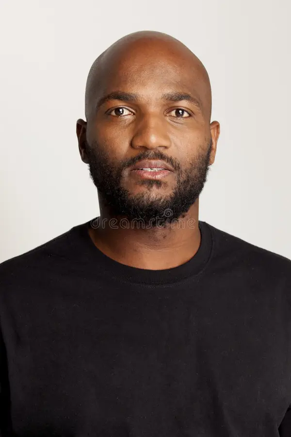

Sipho Mthembu
Co-Founder & DirectorA former teacher who saw gaps in after-school care, Sipho guides programme strategy and community partnerships.
From a simple idea on the streets of Soweto to a thriving community organisation, Dlala Brothers NGO is powered by the belief that every child deserves safety, education, and joy.
Explore Our StoryWe empower children and youth in Soweto with holistic support that nurtures education, wellness, creativity, and leadership. Our programmes are rooted in Ubuntu — the belief that our humanity is bound together. By creating safe spaces, connecting families with resources, and celebrating local talent, we inspire confident leaders of tomorrow.
What started as two brothers helping children with homework has become one of Soweto’s most trusted youth organisations. Explore the defining moments that shaped Dlala Brothers NGO.
Brothers Sipho and Thando Mthembu transform an abandoned classroom into a vibrant after-school space.
Launch of weekend sports clubs and arts workshops, reaching over 300 children across Orlando West.
Opening of our dedicated centre with a library, computer lab, nutrition kitchen, and counselling room.
Awarded South Africa’s Community Impact Award for excellence in youth development programmes.
Supporting over 850 children annually with plans to introduce STEM labs and mental wellness clinics.
A community-led organisation makes decisions with the people it serves. Our leadership team includes educators, social workers, parents, and youth alumni who grew up with Dlala Brothers.
A former teacher who saw gaps in after-school care, Sipho guides programme strategy and community partnerships.
With a background in social work, Thando ensures every child receives emotional wellness support.
Nomvula designs our tutoring curriculum and trains volunteer mentors to deliver inclusive learning.
Parents, alumni, and school representatives meet quarterly to guide new programmes and hold us accountable.
We publish annual reports detailing programme outcomes, finances, and stories of change. Donors and partners can request detailed metrics, budget breakdowns, and safeguarding policies at any time.